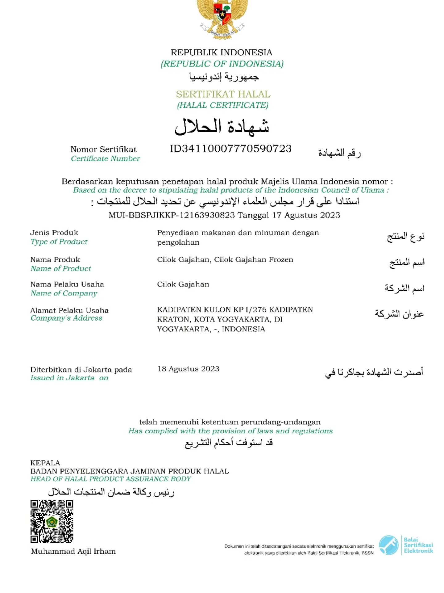

- 2016
Cilok Gajahan berdiri.
- Perkembangan usaha
Mulai mengembangkan model kemitraan untuk memperluas jangkauan usaha.
- Perluasan layanan
Memanfaatkan layanan pemesanan online untuk memudahkan pelanggan mendapatkan produk.
- 18 Agustus 2023
Cilok Gajahan dan Cilok Gajahan Frozen memperoleh Sertifikat Halal.
- Sekarang
Hadir di empat titik: Pusat Jl. Polowijan, Alfamidi Jakal Km 9,3, Seturan, dan Jl. Soepomo.
Sertifikat Halal
Sertifikat Halal Cilok Gajahan dan Cilok Gajahan Frozen diterbitkan oleh Badan Penyelenggara Jaminan Produk Halal (BPJPH) pada 18 Agustus 2023, berdasarkan ketetapan halal Majelis Ulama Indonesia tanggal 17 Agustus 2023.

Klik gambar untuk memperbesar.